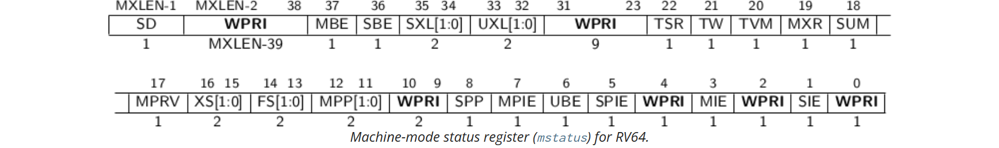
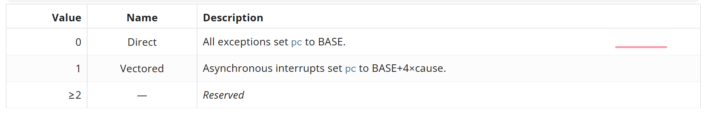
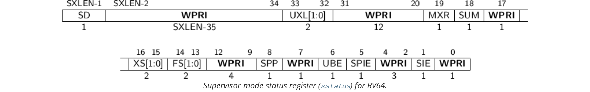

RISCV 中断
Table of Contents
trap 陷阱 可以分为 异常 与 中断 。在 RISC v 下，中断有三种来源：
- software interrupt
- timer interrupt（顾名思义，时钟中断）
- external interrupt
你可能见过 NMI，但是这是一种中断类型而非中断来源：
- Non-maskable interrupt，不可屏蔽中断，与之相对的就是可屏蔽中断
- NMI 都是硬件中断，只有在发生严重错误时才会触发这种类型的中断
你可能接触过 Linux 中的软中断，即 softirq 但是请注意 software interrupt 与 softirq 是完完全全不一样的
接下来将全面介绍 RISC v 下的中断发送与处理、软件中断、用户态中断和特权级转换，并结合 xv6 内核、rcore、Linux 内核等实现进行介绍
中断有关的寄存器
- M-mode 寄存器：
mstatus ， mtvec ， medeleg ， mideleg ， mip ， mie ， mepc ， mcause ， mtval
- S-mode 寄存器:
sstatus ， stvec ， sip ， sie ， sepc ， scause ， stval ， satp
在后文中，可能会有 xstatus , xtvec 等的写法，其中 x 表示特权级 m 或者 s 或者 u（u 仅仅在实现了用户态中断的 CPU 上存在）
M-mode
mcause

RISC-V 定义 mcause 的高位和低位分别表示不同的信息：
- 最高位 (Interrupt bit)
- 0：表示 异常 (Exception)
- 1：表示 中断 (Interrupt)
- 其余位 (Exception Code / Interrupt Code)
- 当最高位是 0：剩余位表示 异常原因
- 当最高位是 1：剩余位表示 中断类型
| Code | 异常 (Exception) 类型 |
| 0 | 指令地址不对齐 (Instruction address misaligned) |
| 1 | 指令访问错误 (Instruction access fault) |
| 2 | 非法指令 (Illegal instruction) |
| 3 | 断点 (Breakpoint) |
| 4 | 加载地址不对齐 (Load address misaligned) |
| 5 | 加载访问错误 (Load access fault) |
| 6 | 存储/AMO 地址不对齐 (Store/AMO address misaligned) |
| 7 | 存储/AMO 访问错误 (Store/AMO access fault) |
| 8 | 环境调用 U 模式 (Environment call from U-mode) |
| 9 | 环境调用 S 模式 (Environment call from S-mode) |
| 11 | 环境调用 M 模式 (Environment call from M-mode) |
| 12 | 指令页错误 (Instruction page fault) |
| 13 | 加载页错误 (Load page fault) |
| 15 | 存储/AMO 页错误 (Store/AMO page fault) |
| Code | 中断 (Interrupt) 类型 |
| 0 | 用户软件中断 (User software interrupt) |
| 1 | 管理员软件中断 (Supervisor software interrupt) |
| 3 | 机器软件中断 (Machine software interrupt) |
| 4 | 用户定时器中断 (User timer interrupt) |
| 5 | 管理员定时器中断 (Supervisor timer interrupt) |
| 7 | 机器定时器中断 (Machine timer interrupt) |
| 8 | 用户外部中断 (User external interrupt) |
| 9 | 管理员外部中断 (Supervisor external interrupt) |
| 11 | 机器外部中断 (Machine external interrupt) |
mstatus

MIE 与 SIE 是 全局中断使能位 ，当 xIE 为 1 时，允许在 x 特权级发生中断，否则不允许中断。
- 当 hart 处于 x 特权级时
- 当 xIE 为 0 时，x 特权级的中断被全部禁用， xIE 为1 时被全部启用
- 当 xIE 为 0 时
- 对于任意的 w<x，w 特权级的中断都是处于全局禁用状态
- 对于任意的 y>x，y 特权级的中断默认处于全局启用状态，无论 xIE 是否为 1
- 为支持嵌套陷阱，每个可以响应中断的特权模式 x 都有一个 两级中断使能位 和 特权模式堆栈
- xPIE 保存陷阱之前活动的中断使能位的值
- xPP 保存之前的特权模式
- xPP 字段只能保存 x 及以下特权模式，因此 MPP 为 两位 宽， SPP 为 一位 宽
- 当从特权模式 y 进入特权模式 x 时
- xPIE 设置为 xIE 的值，xIE 设置为 0
- xPP 设置为 y：对于 MPP，可以设置的值有 0b00（用户模式），0b01（S-mode），0b10(reserved)，0b11(M-mode)
- 在 M 模式或 S 模式中，使用 mret 或 sret 指令返回陷阱。执行 xret 指令时
- 将 xIE 设置为 xPIE；将 xPIE 设置为 1
- 假设 xPP 值为 y，则将特权模式更改为 y
- 将 xPP 设置为 U（如果不支持用户模式，则为 M）
- 如果 xPP≠M，则 xRET 还会设置 MPRV=0
mtvec
mtvec 记录的是 异常处理函数的起始地址 ：
- BASE 字段中的值必须始终对齐于 4 字节边界
- MODE 设置可能会对 BASE 字段中的值施加额外的对齐约束
- 如果 MODE 为 0，那么所有的异常处理都有同一个入口地址
否则的话异常处理的入口地址是 BASE+4*CAUSE
cause 记录在 xcause 中

medeleg 与 mideleg
默认情况下，各个特权级的陷阱都是被捕捉到了 M-mode 可以通过代码实现将 trap 转发到其它特权级进行处理
为了提高转发的性能在 CPU 级别做了改进并提供了 medeleg 和 mideleg 两个寄存器：
- medeleg machine exception delegation 用于指示转发哪些异常到 S-mode
- mideleg machine interrupt delegation 用于指示转发哪些中断到 S-mode
当将陷阱委托给 S 模式时
- scause 寄存器会写入 陷阱原因
- sepc 寄存器会写入 引发陷阱的指令的虚拟地址
- stval 寄存器会写入 特定于异常的数据
- mstatus 的 SPP 字段会写入 发生陷阱时的活动特权级
- mstatus 的 SPIE 字段会写入 发生陷阱时的 SIE 字段的值
- mstatus 的 SIE 字段会被 清除
- mcause、mepc 和 mtval 寄存器以及 mstatus 的 MPP 和 MPIE 字段不会被写入
被委托的中断会导致该中断在委托者所在的特权级 屏蔽
比如说 M-mode 将一些中断委托给了 S-mode，那么 M-mode 就无法捕捉到这些中断了
mip 与 mie
mip 与 mie 是分别用于保存 pending interrupt 和 pending interrupt enable bits
每个中断都有中断号 i（定义在 mcause 表中） 每个中断号如果被 pending 了，那么对应的第 i 位就会被置为 1 因为 RISC v spec 定义了 16 个标准的中断，因此低 16bit 是用于标准用途，其它位则自定义
如下图所示是低 16bit 的 mip 与 mie 寄存器

只需要知道 mcause 中的中断源即可 例如 SSIP 就是 supervisor software interrupt pending SSIE 就是 supervisor software interrupt enable
| 位位置 | 名称 | 含义 |
| 0 | USIE | 用户软件中断使能 |
| 1 | SSIE | 管理员（S 模式）软件中断使能 |
| 3 | MSIE | 机器（M 模式）软件中断使能 |
| 4 | UTIE | 用户定时器中断使能 |
| 5 | STIE | S 模式定时器中断使能 |
| 7 | MTIE | M 模式定时器中断使能 |
| 8 | UEIE | 用户外部中断使能 |
| 9 | SEIE | S 模式外部中断使能 |
| 11 | MEIE | M 模式外部中断使能 |
如果要允许 “机器定时器中断” ，就需要把 mie.MTIE 位置 1
| 位位置 | 名称 | 含义 |
| 0 | USIP | 用户软件中断挂起 |
| 1 | SSIP | S 模式软件中断挂起 |
| 3 | MSIP | M 模式软件中断挂起 |
| 4 | UTIP | 用户定时器中断挂起 |
| 5 | STIP | S 模式定时器中断挂起 |
| 7 | MTIP | M 模式定时器中断挂起 |
| 8 | UEIP | 用户外部中断挂起 |
| 9 | SEIP | S 模式外部中断挂起 |
| 11 | MEIP | M 模式外部中断挂起 |
当定时器溢出时，硬件会把 mip.MTIP 置 1，表示有一个 M 模式定时器中断等待处理
mie 和 mip 的关系
- mie: 允许哪些中断
- mip: 哪些中断正在等待
CPU 是否真正响应中断取决于：
if (mstatus.MIE == 1) and (mip & mie 有重叠的位) → 触发中断
也就是说：
- 必须 全局中断使能位 mstatus.MIE=1
- 必须 mie 里对应的中断源被允许
- 必须 mip 里对应的中断源正在挂起
举个例子：机器定时器中断 1. 硬件定时器达到设定值 → mip.MTIP = 1 2. 软件提前打开了 mie.MTIE = 1 3. 且全局 mstatus.MIE = 1 → 4. CPU 立即跳转到 mtvec 指定的中断入口 5. 处理中断时，硬件会自动清 mstatus.MIE=0，防止嵌套 6. 返回时执行 mret，恢复原始 MIE 状态
mpec
当 trap 陷入到 M-mode 时，mepc 会被 CPU 自动写入 引发 trap 的指令的虚拟地址 或者是 被中断的指令的虚拟地址
mtval
当 trap 陷入到 M-mode 时，mtval 会被 置零 或者被写入与 异常相关的信息 来辅助处理 trap
- 当触发 硬件断点 、 地址未对齐 、 access fault 、 page fault 时，mtval 记录的是 引发这些问题的虚拟地址
S-mode
sstatus

与中断相关的字段是 SIE 、 SPIE 、 SPP ：
- SPP 位：指示处理器 进入 supervisor 模式之前 的 特权级别
- 当发生陷阱时，如果该陷阱来自用户模式，则 SPP 设置为 0；否则设置为 1
- 当执行 SRET 指令从陷阱处理程序返回时
- 如果 SPP 位为 0，则特权级别设置为用户模式
- 如果 SPP 位为 1，则特权级别设置为 supervisor 模式，然后将 SPP 设置为 0
- SIE 位：在 supervisor 模式下 启用 或 禁用 所有中断
- 当 SIE 为零时，在 supervisor 模式下不会进行中断处理
- 当处理器在用户模式下运行时，忽略 SIE 的值，并启用 supervisor 级别的中断
- 可以使用 sie 寄存器 来禁用单个中断源
- SPIE 位：指示 陷入 supervisor 模式 之前是否 启用 了 supervisor 级别的中断
当执行跳转到 supervisor 模式的陷阱时，将 SPIE 设置为 SIE，并将 SIE 设置为 0
SPIE = SIE; SIE = 0;
当执行 SRET 指令时，将 SIE 设置为 SPIE，然后将 SPIE 设置为 1
SIE = SPIE; SPIE = 1;
其它 s 特权级寄存器
stvec, sip, sie,sepc, scause, stval 与 m-mode 的相应寄存器区别不大 可自行参阅 RISC v 的 spec
satp 比较特殊，在 M-mode 没有对应的寄存器，因为 M-mode 没有分页，satp 记录的是 根页表物理地址的页帧号
在从 U 切换到 S 时，需要切换页表，也即是切换 satp 的根页表物理地址的页帧号